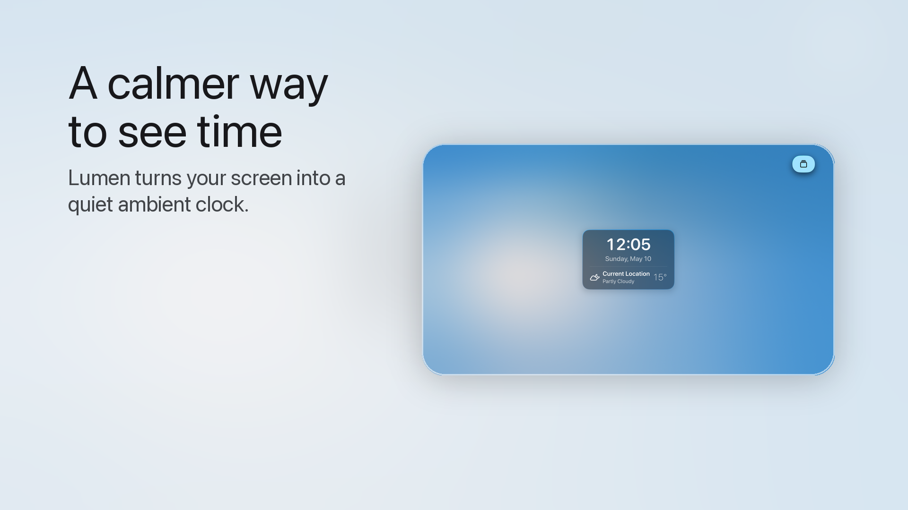
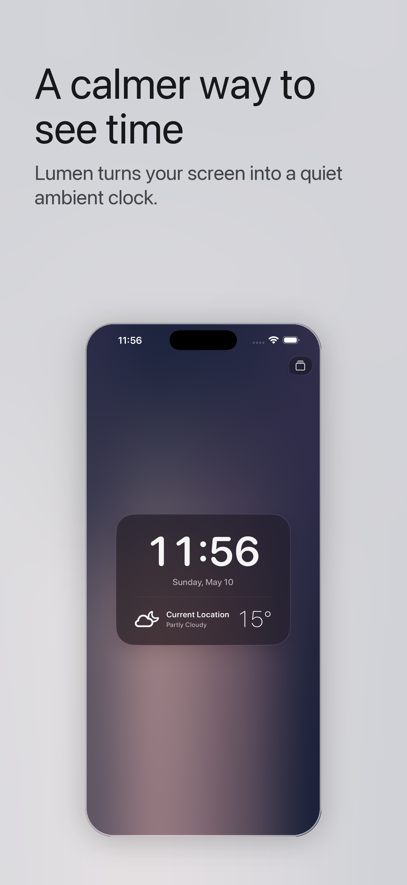
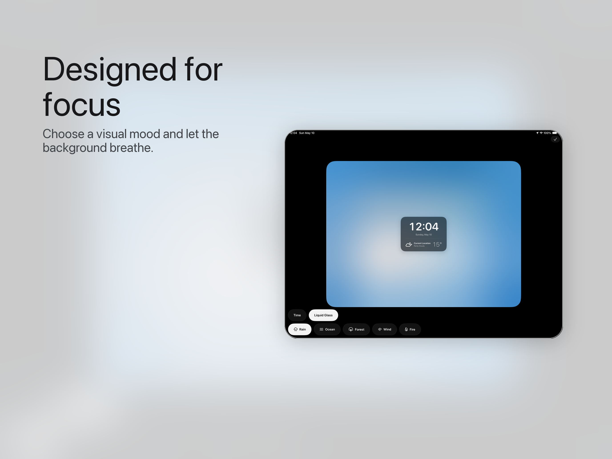
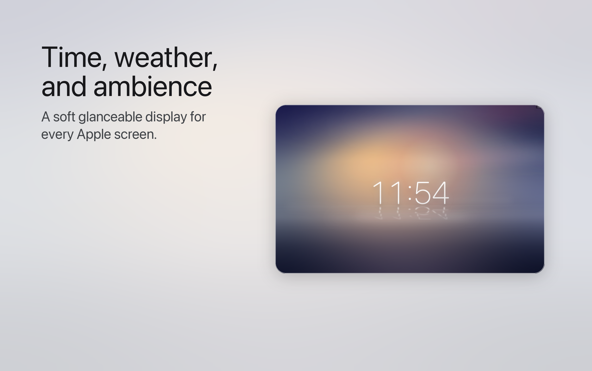

Glanceable time
Full-screen clock scenes keep time visible while staying calm enough for desks, bedside tables, and shared rooms.
Ambient clock for every Apple screen
Lumen Noise blends time, local weather, gentle motion, and natural sound into a quiet display for focus, rest, and everyday atmosphere.

Built for ambience
Full-screen clock scenes keep time visible while staying calm enough for desks, bedside tables, and shared rooms.
Local weather can shape the display, making the screen feel connected to the moment outside.
Choose from rain, ocean, forest, wind, and fire to create a softer background for work or rest.
Designed for iPhone, iPad, Mac, and Apple TV, from close-up focus sessions to room-scale ambient display.
Screens



Lumen Noise